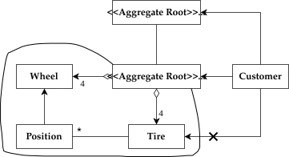
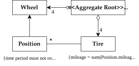
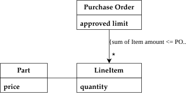
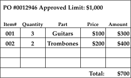
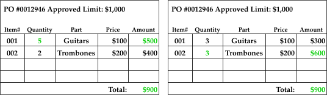
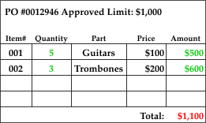
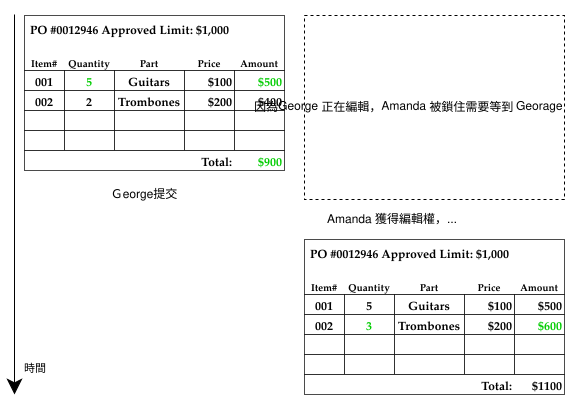
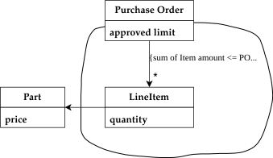

Aggregate
Aggregate 是 Domain-Driven Design 中用來管理「一組相關物件」的模式。它讓我們以業務語意去劃定邊界，確保資料的一致性與完整性。
What
定義
Aggregate 是一組緊密相關的物件集合，被視為一個資料修改的單元。每個 Aggregate 由一個 Aggregate Root 與一條明確的 Boundary (邊界) 所定義。
- Aggregate Root：Aggregate 的唯一對外入口。外部世界只能引用 Root，不能直接操作邊界內的其他物件。
- Boundary：劃定哪些物件屬於同一個 Aggregate。邊界內的物件可以互相引用，邊界之間的物件則只能透過 Root 互動。
Why
沒有 Aggregate 的情況下，任何外部物件都可以自由地修改邊界內的任一物件，導致：
- Invariant 被破壞：無法保證業務規則（如採購訂單的總金額限制）在多人操作時仍然成立。
- 難以追蹤刪除責任：例如刪除
Person時，它的Address要一起刪嗎？如果沒有邊界，這個決策分散在每個操作中。 - Locking 難以管理：多使用者同時修改一個物件群集時，不知道該鎖住哪個範圍。
Aggregate 透過明確的邊界與 Root 來集中這些責任，讓業務規則有一個守護者。
Rules
| 規則 | 說明 |
|---|---|
| Aggregate Root 有 Global ID | 可被外部直接查詢（如資料庫查詢）。 |
| 內部物件只有 Local ID | 只在此 Aggregate 邊界內唯一，外部無法直接查詢。 |
| 外部只能持有 Root 的引用 | 內部物件可以傳遞到外部，但外部不能保留對它的持久引用。 |
| Root 負責檢查 Invariant | 所有對邊界內物件的修改，都必須通過 Root 的業務規則驗證。 |
| 只能透過 Root 查詢內部物件 | 不可繞過 Root 直接查出邊界內的物件。 |
| 刪除以 Aggregate 為單位 | 刪除 Root 時，邊界內所有物件必須一併刪除。 |
| 跨 Aggregate 不需即時同步 | Aggregate 之間可透過 Domain Event 或 Batch 等最終一致性機制更新。 |
Examples
汽車 (Car)

| 物件 | 類型 | 說明 |
|---|---|---|
Car |
Aggregate Root | 具有全球唯一車籍號碼 (VIN)，是查詢的入口。 |
Wheel |
邊界內 Entity | 具有 Local ID（如 LF, RR），不被外部直接追蹤。 |
Tire |
邊界內 Entity | 消耗品，透過 Car 管理，不獨立追蹤。 |
Position |
邊界內 Value Object | 記錄零件的安裝位置與里程，協助維護 Invariant。 |
Engine |
可能是另一個 Aggregate Root | 若引擎需要獨立維修追蹤，則自成一個 Aggregate。 |
Invariants：

{time period must not overlap on same wheel}：同一個輪框不可在相同時間點出現在多個位置。{mileage = sum(Position.mileage)}：輪胎的總里程必須等於各 Position 的里程總和。
採購訂單 (Purchase Order)

當多個使用者同時修改 PO 的不同 Line Item 時，各自看來都符合金額上限，但合併後卻超標——這正是 Invariant 被破壞的例子。
資料庫中 PO 的初始情況

Georage 與 Amanda 同時修改 PO，分別增加 Guitar 與 Trombone 的數量。這兩個人在各自的視圖中，都認為修改是合法的 (Total <= Approved Limit)。

但兩個人的修改合併後，總金額卻超過了上限 (Total > Approved Limit)。

解法：將整筆 Purchase Order 視為一個 Aggregate，任何修改都需要鎖定整個 Root (PO)，由 Root 統一驗證金額上限。

How
Aggregate Root 的基本結構
// Aggregate Root
public class PurchaseOrder {
private final PurchaseOrderId id; // Global ID
private final Money approvedLimit;
private final List<LineItem> lineItems; // 邊界內物件
// 只能透過 Root 的方法來修改邊界內物件
public void addLineItem(Part part, int quantity) {
Money newTotal = calculateTotal().add(part.getPrice().times(quantity));
// Root 負責檢查 Invariant
if (newTotal.isGreaterThan(approvedLimit)) {
throw new ApprovedLimitExceededException(approvedLimit, newTotal);
}
lineItems.add(new LineItem(part.getId(), part.getPrice(), quantity));
}
private Money calculateTotal() {
return lineItems.stream()
.map(LineItem::getAmount)
.reduce(Money.ZERO, Money::add);
}
}
// 邊界內物件 (Local Identity)
public class LineItem {
private final PartId partId;
private final Money price; // PO 建立當下的價格快照，非最新價格
private final int quantity;
public Money getAmount() {
return price.times(quantity);
}
}
跨 Aggregate 的引用

// 正確：只持有另一個 Aggregate Root 的 ID
public class LineItem {
private final PartId partId; // 只存 Part 的 ID，而非 Part 物件本身
// ...
}
// 錯誤：不應持有其他 Aggregate 內部物件的引用
public class LineItem {
private final Part part; // ❌ 直接引用 Part 物件（若 Part 是另一個 Aggregate）
}
Repository 只為 Root 提供查詢
// 正確：Repository 只針對 Aggregate Root
public interface PurchaseOrderRepository {
Optional<PurchaseOrder> findById(PurchaseOrderId id);
void save(PurchaseOrder order);
}
// 錯誤：不應提供 LineItem 的獨立查詢
public interface LineItemRepository { // ❌
Optional<LineItem> findById(LineItemId id);
}